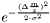
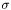
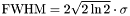
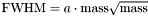
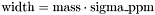
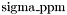
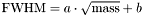
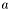
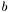

A mass spectrum usually consists of intensities drawn over the mass-over-charge values, called 'mass channels'. In theory, ions with a distinct mass-over-charge ratio should only contribute to one mass channel producing a sharp peak in the mass spectrum. Due to imprecisions in the measurement caused by random physical processes the actual peak is smeared out over a few neighboring mass channels, resembling roughly a bell-shaped-curve in the intensity domain. Thus, a function describing the envelope of a single peak in a mass spectrum is called a peakshape function.
The box peakshape function is the rectangular function with a fixed width. It is implemented and used in the transmogrifier unit test.
This function is too crude an approximation and shouldn't be used in serious data analysis.
The gaussian peakshape function is . The only parameter is the full width at half maximum, which is connected to  via .
This peakshape function is independent of the absolute value of the mass channel. In a real mass spectrum the width of the peakshape is dependent on the mass channel (the resolution is usually decreasing with higher masses). So, this function should only be used in a relatively small mass interval, where one can safely neglect this change in the peak width.
The Orbitrap peak shape is gaussian. The full width at half maximum of the gaussian depends on the absolute value of the mass channel and is calculated as follows: .
The Orbitrap box peakshape function is the rectangular function. The width of the rectangle depends on the absolute value of the mass channel: .
 is the only parameter and can be choosen as the resolution of an Orbitrap in parts-per-million. Since for a real Orbitrap the peak width depends on the mass channel in a non-linear way and the peak shape is far away from a box, this is a very crude approximation. Nevertheless, it can be used to speed up the calculation on good data sets (high signal-to-noise ratio, few overlapping isotope patterns etc.) and can perform passable on such data.
The time-of-flight peakshape function is gaussian. The full width at half maximum depends on the absolute value of the mass channel as follows: .  and  are parameters. They can be determined with the help of a peakshape function estimator (by fitting the function on a given spectrum). This formula can be deduced from the physics of a time-of-flight mass spectrometer.
 1.6.1
1.6.1